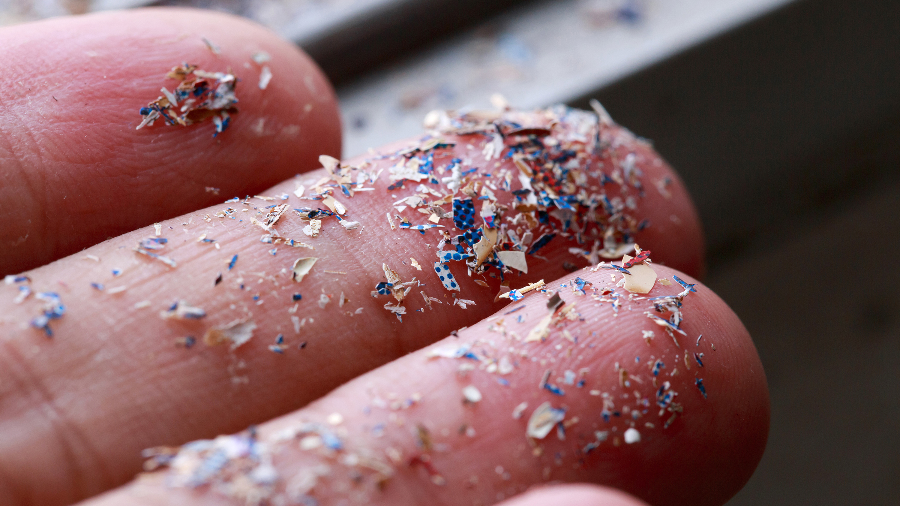
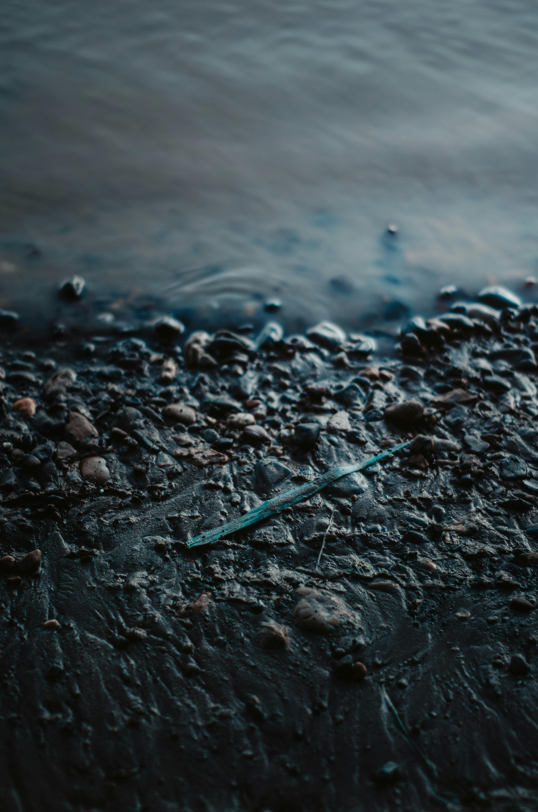
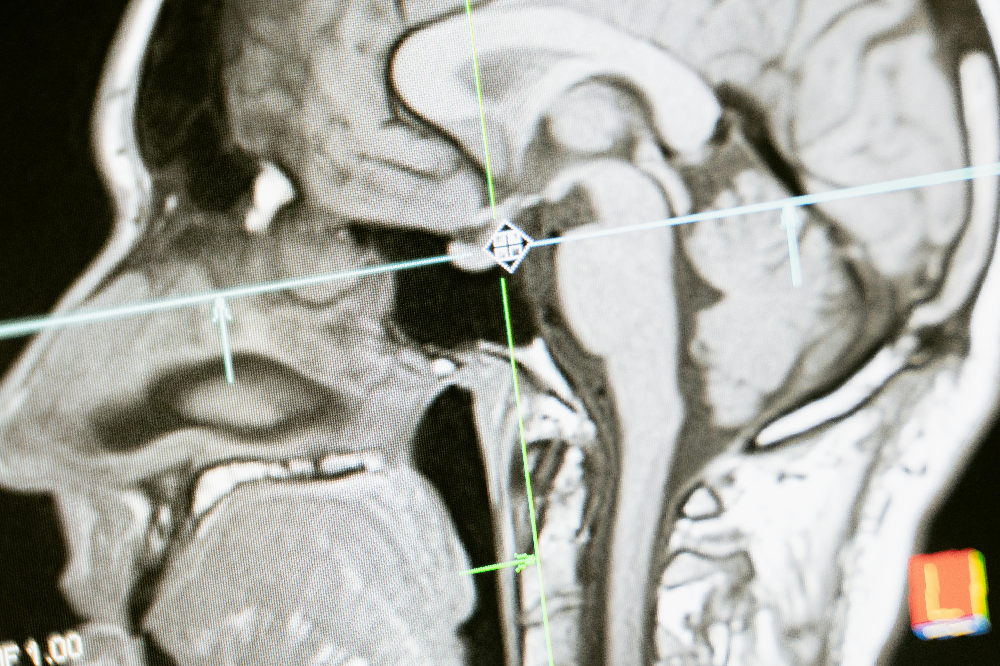

The Problem with Plastic
Microplastics are making their way into human brains at higher levels than in other vital organs, according to new findings. The study, published in Nature Medicine on Feb. 3, confirms that tiny plastic fragments are passing through the brain’s protective blood-brain barrier, potentially impacting health and cognitive function.

Finding such high concentrations in the brain was unexpected and alarming, Matthew Campen, lead researcher and toxicologist, told The Epoch Times during a press conference. “People are simply being exposed to ever-increasing levels of micro- and nanoplastics,” Campen said. The particles are so small, they’re roughly the width of two COVID viruses standing side by side, he noted.

The rate of accumulation “is simply mirroring the environmental buildup and exposure.” As plastic breaks down over time, it degrades and becomes small enough to enter the human body and brain. Brain tissue contained seven to 30 times more microplastics than other vital organs such as the livers or kidneys, making it one of the most plastic-polluted tissues yet examined.